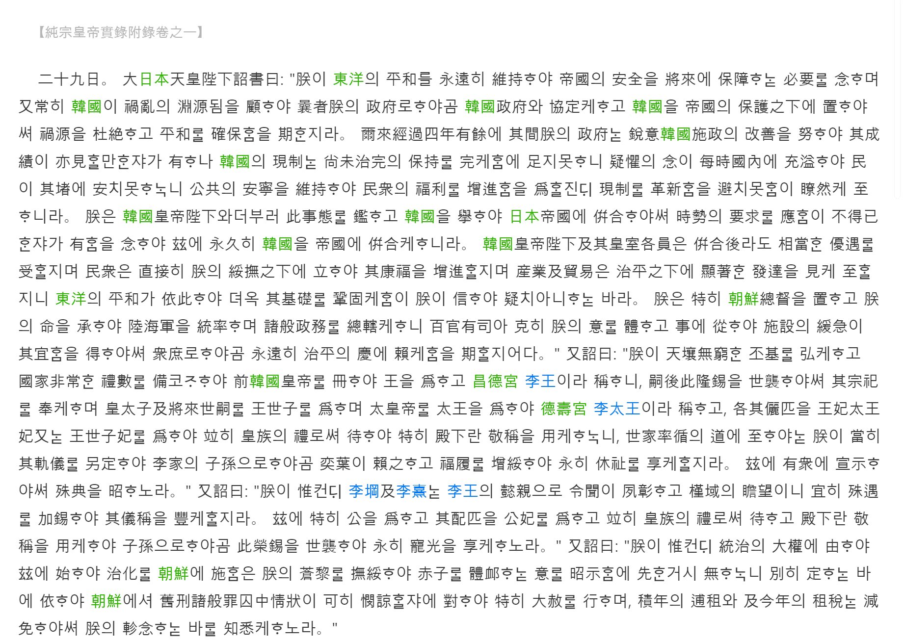

대일본(大日本) 천황 폐하(天皇陛下)의 조서(詔書)에,
"짐(朕)이 동양(東洋)의 평화를 영원히 유지하여 제국(帝國)의 안전을 장래에 보장하는 필요를 생각하며, 또 항상 한국(韓國)이 화란(禍亂)의 근원됨을 돌아보아 지난번에 짐의 정부로 하여금 한국정부와 협정하게 하고 한국을 제국의 보호 하에 두어서 화의 근원을 두절(杜絶)하고 평화의 확보를 기하였다. 그 이래 4년 남짓 경과하여 그 사이 짐의 정부는 한국 시정(施政)의 개선에 확고한 의지로 노력하여 그 성적(成績)이 또한 볼 만한 것이 있으나, 한국의 현 제도는 아직 미완의 다스림의 보지(保持)를 완전하게 하는 데에 충분하지 못하니 의구의 염이 늘 국내에 충일하여 백성이 그 울타리에서 편안치 못하니 공공의 안녕을 유지하여 민중의 복리를 증진함을 위할진대 현 제도의 혁신을 피하지 못함이 뚜렷이 이르렀다. 짐은 한국 황제 폐하와 더불어 이 사태를 보고 한국을 들어서 일본 제국에 병합하여 이로써 시세의 요구에 응함이 부득이한 것이 있음을 생각하여 이에 영구히 한국을 제국에 병합케 한다. 한국 황제 폐하 및 그 황실 각원(各員)은 병합 후라도 상당한 예우를 받을 것이며, 민중은 직접 짐의 위무 아래에서 그 강복(康福)을 증진할 것이며, 산업 및 무역은 평온한 통치 아래에서 현저한 발달을 보이기에 이를 것이니, 동양의 평화가 이에 의하여 더욱 그 기초를 공고하게 함이 짐이 믿어 의심치 아니하는 바이다. 짐은 특히 조선 총독(朝鮮總督)을 두고 짐의 명을 받아서 육해군(陸海軍)을 통솔하며 제반 정무(政務)를 모두 관할케 하니 백관유사(百官有司)는 충분히 짐의 뜻을 체득하고 일에 종사하여 시설(施設)의 완급(緩急)이 마땅함을 얻어서 중서(衆庶)로 하여금 영원히 평온한 통치의 경사에 의뢰하게 함을 기하라."
하였다. 또 조령(詔令)을 내리기를,
"짐이 영원무궁한 큰 토대를 넓게 하고 국가의 비상한 예의를 마련하고자 하여 전 한국 황제(韓國皇帝)를 책봉하여 왕(王)으로 삼고 창덕궁 이왕(昌德宮李王)이라 칭하니 이후 이 융숭한 하사를 세습하여 그 종사(宗祀)를 받들게 하며, 황태자(皇太子) 및 장래 세사(世嗣)를 왕세자(王世子)로 삼으며, 태황제(太皇帝)를 태왕(太王)으로 삼아 덕수궁 이태왕(德壽宮李太王)이라 칭하고, 각각 그 배필을 왕비(王妃), 태왕비(太王妃) 또는 왕세자비(王世子妃)로 삼아 모두 황족(皇族)의 예로써 대하여 특히 전하(殿下)라는 경칭(敬稱)을 사용하게 하니, 대대로 따르는 도리에 있어서는 짐이 마땅히 법도와 의례를 따로 정하여 이가(李家)의 자손으로 하여금 대대손손 이에 의지하고 복록(福祿)을 더욱 편안히 하여 영구히 행복을 누리게 한다. 이에 대중에게 널리 알려서 특별한 법을 밝힌다."
하였다. 또 조령을 내리기를,
"짐이 생각건대, 이강(李堈) 및 이희(李熹)는 이왕(李王)의 의친(懿親)으로 명성이 일찍부터 두드러졌고 근역(槿域)이 우러러 보고 있으니 마땅히 특별한 대우를 가석(加錫)하여 그 의칭(儀稱)을 풍부하게 해야 할 것이다. 이에 특히 공(公)을 삼고 그 배필을 공비(公妃)로 삼고 모두 황족의 예로써 대하고 전하(殿下)라는 경칭을 쓰게 하여 자손으로 하여금 이 영광의 하사를 세습하여 영구히 아끼는 영광을 누리게 한다."
하였다. 또 조령을 내리기를,
"짐이 생각건대, 통치의 대권(大權)에 말미암아서 이에 시작하여 통치의 교화를 조선에 베풂은 짐의 무수한 백성을 위무하고 편안히 하여 백성을 체휼(體䘏)하는 뜻을 밝힘에 앞서는 것이 없으니 따로 정하는 바에 의하여 조선에서 구형(舊刑)의 제반 죄수 중에 정상(情狀)이 가엾게 여길만한 자에 대하여 특히 대사(大赦)를 행하며, 여러 해의 포조(逋租) 및 금년의 조세는 감면하여 짐의 진념(軫念)하는 바를 모두 알게 한다."
하였다.
칙령(勅令) 제318호
한국(韓國)의 국호(國號)를 고쳐 지금부터 조선(朝鮮)이라 칭한다.
칙령 제319호
조선에 조선 총독부(朝鮮總督府)를 설치한다. 조선 총독부에 조선 총독을 두어 위임의 범위 내에서 육군과 해군을 통솔하여 일체의 정무를 통할(統轄)하게 한다. 통감부(統監府) 및 그 소속 관서는 당분간 그대로 두어 조선 총독의 직무를 통감이 행하게 한다. 지금까지 한국 정부에 속한 관청은 내각(內閣) 및 표훈원(表勳院)을 제외하고는 조선 총독부 소속 관서로 간주하여 당분간 그대로 둔다. 전항(前項)의 관서에 근무하는 관리에 관해서는 구 한국 정부에 근무하는 것과 동일한 취급을 한다. 다만 구 한국 법규에 의한 친임관(親任官)은 친임관의 대우, 칙임관(勅任官)은 칙임관의 대우, 주임관(奏任官)은 주임관의 대우, 판임관(判任官)은 판임관의 대우를 받는 것으로 하고, 또 관직에 있으면서 빙용(聘用)의 허가를 받은 자는 명치(明治) 37년 칙령 제 195호의 적용을 받는 자로 간주한다.
칙령 제323호
조선 총독부를 설치하는 때의 한국(韓國) 군인의 취급은 육군 군인에 준하고 그 관등, 계급, 임면(任免), 분한(分限), 급여 등에 관해서는 당분간 종전의 규정에 의한다. 전항의 군인 중에 현직에 있는 자는 주차군 사령부(駐箚軍司令部)나 혹은 주차헌병대 사령부(駐箚憲兵隊司令部) 부속으로 한다.
칙령 제326호
구 한국 정부(舊韓國政府)에 속하는 세입(歲入) 세출(歲出)의 예산은 당분간 종전의 방식대로 습용(襲用)한다.
칙령 제327호
조선에서 하는 임시 은사(恩賜)에 충당하기 위하여 정부는 3,000만 환(圜)에 한하여 5분(分) 이자를 붙여 국채(國債)를 발행할 수 있다.
칙령 제328호
종래 대장성(大藏省) 예금부(預金部)에 대하여 한국(韓國) 정부가 부담하는 채무는 따로 규정을 마련하기까지 일반 회계의 부담에 속하게 한다.
칙령 제329호
조선에서 하는 임시 은사는 명치 43년 칙령 제 327호에 의하여 발행한 국채 증권(國債證券)으로써 하부(下付)한다.
칙령 제334호
구 한국 훈장(勳章) 및 기장(記章)은 당분간 패용할 수 있다.
천황 폐하가 조령을 내리기를,
"짐이 생각건대, 이가(李家)의 의친(懿親) 및 그 방가(邦家)의 큰 공로가 있는 자는 마땅히 우대하는 반열에 올리고 서용하여 조선 귀족으로 삼아 아끼는 영광을 보일 것이니, 이에 옛 덕(德)과 이전의 공(功)의 등급을 매기며 작위(爵位) 세습의 법을 정하여 조선(朝鮮) 귀족령(貴族令)이라 하고 재가하여 반포하게 한다."
하였다.
황실령(皇室令) 제14호 : 조선(朝鮮)귀족령(貴族令)
제1조
본령(本令)에 의하여 작위(爵位)를 준 바가 되거나 혹은 작위를 세습한 자를 조선 귀족으로 삼는다. 작위 소유자의 부인은 조선 귀족의 족칭(族稱)을 누린다.
제2조
작위는 현재 이왕의 혈족(血族)으로서 황족(皇族)의 예우를 누리지 않는 자 및 문벌이나 혹 공로가 있는 조선인에게 준다.
제3조
작위는 공(公) 후(侯) 백(伯) 자(子) 남(男)의 5등급으로 한다.
제4조
작위를 주는 것은 칙지(勅旨)로써 하고 궁내 대신(宮內大臣)이 봉행한다.
제5조
작위 소유자는 그 작위에 응하여 화족령(華族令)에 의한 작위 소유자와 동일한 예우를 누린다.
제6조
작위 소유자의 부인은 그 남편의 작위에 상당한 예우 및 명칭을 누린다. 작위 소유자의 과부가 그 집에 있을 때에는 특히 귀족의 족칭을 보유하게 하여 종전의 예우 및 명칭을 누리게 한다.
제7조
작위 소유자의 가족으로서 다음에 게시하는 자는 귀족과 동일한 예우 및 귀족의 족칭을 누린다.
1. 증조부(曾祖父), 조부(祖父), 부(父).
2. 작위를 세습할 수 있는 상속인 및 그 적장남자(嫡長男子). 적출(嫡出)의 남자가 없을 때에는 그 서장남자(庶長男子).
3. 앞 2호에 게시한 자의 배우자.
제8조
작위 소유자나 혹 전 제2조의 예우를 누릴 자가 신체나 또는 정신에 중환(重患)이 있거나 혹은 귀족의 체면에 관계되는 사고가 있을 때에는 그 중환이나 혹 사고가 그치기까지 그 예우를 누리지 못한다. 전항(前項)의 중환이나 혹 사고의 유무는 궁내 고등관(宮內高等官) 중에서 칙령한 심사위원으로 하여금 심사하게 한 뒤에 궁내 대신의 상주(上奏)에 의하여 칙재(勅裁)한다.
제9조
작위 소유자는 가범(家範)을 정할 수 있다. 가범은 궁내 대신의 인허를 받아야 한다. 폐지, 변경을 할 때에도 또한 같다. 작위 소유자가 20년 미만인 때나 혹 전조(前條)의 경우에 해당하는 자인 때에는 가범을 정하거나 혹 폐지, 변경할 수 없다.
제10조
작위는 집안의 남자 상속인으로 하여금 세습하게 한다.
제11조
작위를 세습할 수 있는 상속인은 상속을 개시한 때로부터 6개월 내에 궁내 대신에게 상속의 계출(屆出)을 해야 한다. 전항의 계출이 있을 때에는 궁내 대신은 칙허(勅許)를 거쳐야 작위 세습의 사령서(辭令書)를 교부한다.
제12조
작위 세습은 상속을 개시한 때로부터 그 효력을 발생한다.
제13조
다음의 경우에는 상속인은 작위 세습의 특권을 상실한다.
1. 제11조 제1항의 기간 내에 상속의 계출을 하지 아니한 때.
2. 제16조 제2항이나 혹 제18조의 규정에 의하여 귀족의 족칭을 제한 바가 되었을 때.
제14조
상속인이 충순(忠順)을 결하는 행위가 있을 때에는 작위 세습을 칙허하지 않는다. 제8조 제2항의 규정은 전항의 경우에 준용(準用)한다.
제15조
작위 소유자 및 제6조나 혹 제7조의 예우를 누릴 자의 신분에 관하여 감독상 필요한 사항은 궁내 대신이 관장한다.
제16조
작위 소유자가 국적을 상실한 때나 혹 금고(禁錮)나 또는 금옥(禁獄) 이상의 형의 선고를 받고 그 재판이 확정된 때에는 그 작위를 상실한다. 제6조나 혹 제7조의 예우를 누리는 자가 전항의 경우에 해당하는 때에는 귀족의 족칭을 제하거나 혹 예우를 금지한다.
제17조
작위 소유자가 다음 각호(各號)의 하나에 해당하는 때에는 작위를 반납하게 하거나 혹 예우를 정지하거나 또는 금지한다.
1. 귀족의 체면을 더럽힌 실수가 있는 자.
2. 귀족의 품위를 지키지 못한 자.
3. 충순(忠順)을 결한 행위가 있는 자.
4. 궁내 대신의 명령이나 혹 가범에 위반하여 정상(情狀)이 무거운 자.
제18조
제6조나 혹 제7조의 예우를 누리는 자가 전조의 경우에 해당하는 때에는 귀족의 족칭을 제하거나 혹 예우를 정지하거나 또는 금지한다.
제19조
작위 소유자가 예우의 정지나 혹 금지 중에 있을 때에는 제6조 제1항 및 제7조의 예우를 누리는 자도 함께 그 예우를 누리지 못한다.
제20조
작위 소유자가 그 품위를 지키지 못한 때에는 궁내 대신을 거쳐 작위의 반납을 청원할 수 있다.
제21조
제16조 제2항과 제17조 및 제18조의 처분은 칙재를 거쳐 궁내 대신이 행한다. 예우의 정지를 해제할 때에도 또한 같다. 제8조 제2항의 규정은 전항의 처분 및 해제에 준용한다. 예우의 금지를 해제하는 것은 특지(特旨)에서 비롯된다.
제22조
심사위원에 관한 규정은 궁내 대신이 칙재를 거쳐야 정해진다.
황실령(皇室令) 제15호
제1조
조선 귀족령 제8조와 제14조 및 제21조의 경우에는 조선에 거주하는 귀족에 한하여 당분간 조선 총독이 심사위원으로 하여금 심사하게 한 뒤에 궁내 대신에게 이첩해야 한다. 전항의 심사위원은 조선총독부 고등관 중에서 조선 총독이 임명한다. 심사위원에 관한 규정은 조선 총독이 궁내 대신과 협의하여 정한다.
제2조
조선 귀족령 제9조 제2항과 제11조 제1항 및 제20조의 규정에 의하여 계출이나 인허의 신청이나 혹 청원을 함에는 조선에 거주하는 귀족에 한하여 당분간 조선 총독을 경유해야 한다.
제3조
조선 귀족령 제15조의 규정에 의하여 조선에 거주하는 귀족의 감독상 필요한 사항은 당분간 조선 총독이 관장한다. 주요한 사항에 대해서는 궁내 대신과 협의해야 한다.
제4조
조선에 거주하는 귀족이 조선 총독의 명령에 위반하여 정상이 무거울 때에는 조선 귀족령 제17조를 적용한다.
황실령 제16호
서위조례(敍位條例)는 조선 귀족의 서위(敍位)에 관하여 준용한다.
황실령 제20호
전 한국 궁내부 직원(宮內府職員)에 관한 건을 반포하였다. 【전 한국 궁내부 직원으로서 조선 총독이 잔무(殘務)의 취급을 명한 자는 당분간 종전의 관직 구별에 따라 왕족(王族) 및 공족(公族)에 관한 사무를 맡아 처리한다. 조선에 거주하는 왕족 및 공족에 부속하는 전항의 직원은 조선 총독이 감독한다.】
